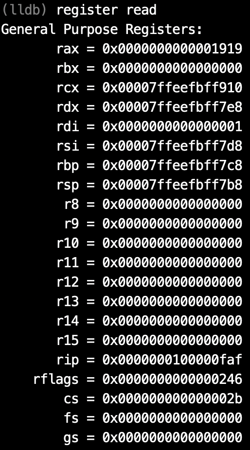
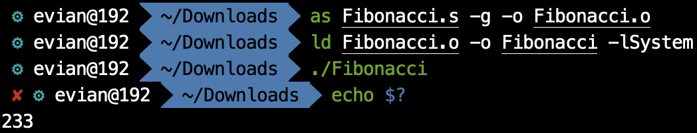

naive blog
macOS上的汇编入门（九）——跳转与函数
通过之前的几篇文章，我们了解了汇编语言的基本语法和变量的使用、寻址方式等，但我们的程序到目前为止，都只局限在
_main
内，既没有函数调用，也没有控制结构，进了
_main
以后一条路走到
retq
. 在这篇文章中，我主要介绍的是汇编语言中的控制结构——跳转，与函数调用。不过在介绍这两个之前，首先需要介绍的是跳转与函数调用的基础——标签。
标签
标签(Label), 是汇编语言中一个重要的组成部分。我们之前在
__DATA
段
__data
节里定义变量的时候，就使用了标签。我们通常使用的标签，定义时是以冒号
:
结尾的一个标识符，且开头不能是数字。
LBB0:
,
a:
,
_func:
,
_main:
都是标签的定义。
我们可以在
.data
段，也可以在
.text
段定义标签，只需要在那里写上标签加上
:
即可。比如说，
loop_begin: movq $0x114514, %rax
jmp loop_begin
就定义了一个标签
loop_begin
, 并且在下一条指令中使用了它. 接下来任何一个地方使用到
loop_begin
, 就代表这个指令所处的地址。
一般来说，定义的标签只能在同一个汇编文件中使用，如果一个汇编文件想使用另一个汇编文件定义的标签，需要另一个汇编文件用
.globl
声明标签是全局可见的，比如说
.globl _main
.
跳转
在介绍完标签之后，就可以解释跳转了。跳转分为无条件跳转与条件跳转。我们首先介绍无条件跳转。
无条件跳转
无条件跳转对应的助记符是
jmp
. 其操作数是标签。
jmp loop_begin
就是跳转到
loop_begin
标记的位置。这里就有一个问题，这样的跳转，是不是position indenpendent的呢？答案是是的。但是和之前PC-relative的技巧不同，这里PIC的方法不是程序员做的，而是汇编器做的。汇编器会直接将
jmp
翻译成相对跳转的机器码，对程序员来说是透明的。所以，我们并不需要太过关心这里的PIC.
我们使用无条件跳转的时候要特别注意，因为极易造成死循环。比如说我们上面的那两行代码，就是死循环。
条件跳转
相比于无条件跳转，我们更常用的是条件跳转。无条件跳转相当于C语言中的
goto
, 而条件跳转则是我们更常见的
if
,
while
等控制语句。下面的例子给我们演示了条件跳转：
cmp $0x114514, %rax
je loop_begin
cmp
, 就是compare, 比较的意思。
je
中的
e
, 就是
equate
, 相等。我们可以大致理解一下这个的意思：如果
%rax
内的值与
0x114514
相等，那么就跳转到
loop_begin
这个标签处。那么，这是如何做到的呢？
我们利用
lldb
查看在执行
cmp $0x114514, %rax
之前和之后，寄存器的变化（关于
lldb
的使用我会在之后的文章中提到）。
在执行
cmp $0x114514, %rax
之前，寄存器的值为：

在执行
cmp $0x114514, %rax
之后，寄存器的值为：
对比两张图，我们发现，除了存有当前指令地址的rip寄存器内的值发生了变化以外，还有一个寄存器的值发生了变化，那就是rflags. 这是什么寄存器呢？这又是根据什么变化的呢？
这就是先行者们一个很妙的设计了。事实上，无论是
cmp
还是别的什么指令，其实大多数都有一个副作用——影响rflags寄存器。rflags寄存器，全称是状态标志寄存器。我们看它不能用十六进制看，要用二进制看。
在执行
cmp
之前，rflags的值是
0x246
, 它的二进制表示是
1001000110
. 执行之后，rflags的值是
0x287
, 它的二进制表示是
1010000111
.
这意味着什么呢？事实上，rflags中某些位是由特定的作用的。我们主要关注其低16位：

每一个以F结尾的都代表一个flag, 比如说CF就是carry flag, 是否进位。而我们的
cmp
指令，若两数相等，则会把ZF位置
1
，否则置
0
. 而
je
指令，则是当ZF位为
1
时再跳转，否则什么事也不做。
那么一个指令究竟会影响多少位呢，这个在指令集( 64-ia-32-architectures-software-developer-instruction-set-reference-manual )中会有详细说明，这里不再赘述。只强调一点，在做运算时，往往都会涉及标志位的改变。结果是否为零、是否进位、是否溢出等等，都是决定各个标志位的因素。
而依据不同的标志位，有不同的条件跳转指令。比如说，依据ZF, 有
je
（ZF=
1
时跳转），
jne
（ZF=
0
时跳转）；依据CF, 有
jc
（CF=
1
时跳转），
jnc
（CF=
0
时跳转）。此外，还有依据多个标志位的跳转指令。但是，我们实际上并不太需要记得跳转指令对应的标志位情况，我们需要记住的是跳转指令对应的逻辑情况，比如说，
je
代表相等时跳转，
jne
代表不相等时跳转；
jg
代表大于时跳转，
jge
代表大于等于时跳转；
jl
代表小于时跳转，
jle
代表小于等于时跳转。这里还要强调一下，“大于”、“小于”究竟是谁大谁小。在我们
cmp a, b
时，实际上执行的是
b
-
a
, 比较的是
b
和
a
.
b
>
a
，会是
jg
的跳转，而
b
<
a
会是
jl
的跳转。
此外，我们还需要记得大部分非跳转指令对应的标志位的改变。比如说，
add
指令涉及的标志位就有OF, SF, ZF, AF, CF和PF.
函数
大略地讲完了跳转之后，就涉及到了函数。我们知道，在跳转时，有一个特点，那就是跳转了就回不来了。除非我们在跳转指令之后再加上一个标签，然后在跳转去的部分中找到合适的位置跳转回来。这是比较麻烦的。所以，跳转指令一般指适用在控制语句中，并不会用于函数的调用。当我们进行函数调用时，应该使用全新的指令——
call
和
ret
.
call
指令和
jmp
指令一样，接受一个标签作为操作数，直观上看和
jmp
的效果也类似，直接跳转到该标签所在的指令。但是，
call
指令还干了一件事——把当前的rip寄存器
push
到栈区里。这实际上和我们利用
jmp
解决跳出去回不来的问题的方法类似，把返回的地址放到栈上。然后，
call
就没事儿了。
在我们执行完函数的运算之后，想要返回之前调用函数的地方，这该怎么办呢？就用到了
ret
.
ret
无操作数，默认当前栈顶，也就是rsp指向的位置，存储的是当初
call
时
push
到栈区的地址，然后直接跳转，并且把那个地址弹栈。因此，在之前提到局部变量的时候，我们在最后恢复了rsp, 让其还是指向最初的位置，目的就是这个。
call
和
ret
都可以加上一个
q
，形成
callq
和
retq
. 这和
call
和
ret
实际上是没有区别的，只是强调那个地址是8个字节的地址。
总结
我们来看一个迭代法计算大于3的数对应的Fibonacci数列的简单的程序：
# Fibonacci.s
.text
.globl _main
_main:
movq $13, %rdi
callq _Fibonacci
retq
_Fibonacci:
movq $1, %rax
movq $1, %rbx
compare:
cmp $2, %rdi
jg loop_continue
retq
loop_continue:
movq %rax, %rcx
addq %rbx, %rax
movq %rcx, %rbx
decq %rdi
jmp compare
这个简单的程序计算了第13项斐波那契数列，并且也用到了这篇文章中所讲的跳转与函数。大家可以仔细研究这个程序。
我们在命令行中键入
as Fibonacci.s -o Fibonacci.o
进行汇编，再键入
ld Fibonacci.o -o Fibonacci -lSystem
进行链接。并使用
./Fibonacci
来执行函数，最后用
echo $?
来查看结果。最终结果如下：

结果正确。
至于这个程序中为什么采用rdi进行参数传递，以及rax作为返回值，还有一些不足和缺陷，我会在下篇文章中提到。
可以在哪看到这系列文章
我在我的 GitHub 上， 知乎专栏 上和 CSDN 上同步更新。
上一篇文章： macOS上的汇编入门（八）——寻址方式与全局变量
下一篇文章： macOS上的汇编入门（十）——再探函数